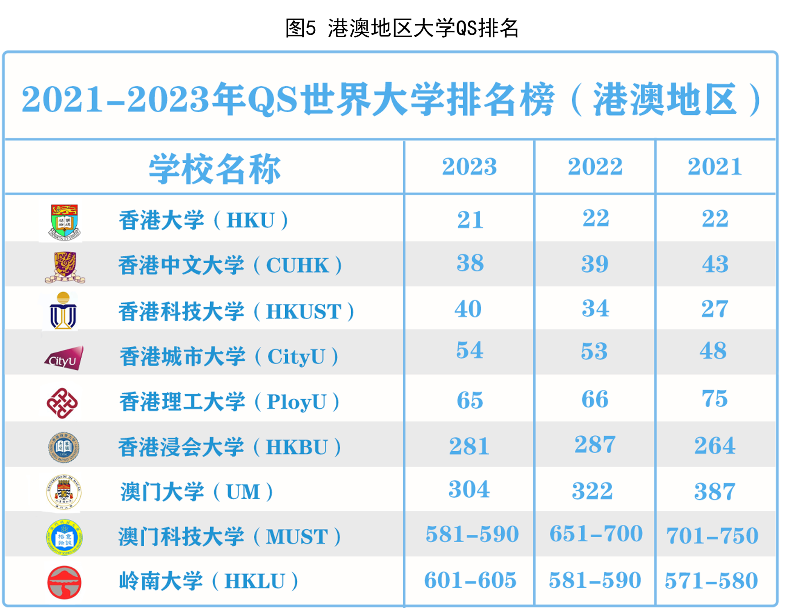
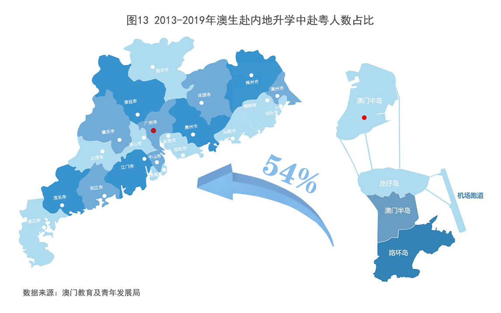

2012-2022年，内地与港澳之间的就读交流持续攀升。内地前往澳门的学生数量上升了250%，其在澳门的外地生源中占比均在93%以上；前往香港的学生数量上升了170%，其在香港的外地生源中平均占比在70%以上。同时，澳门学生流入内地的比例达到49.8%（2019）；香港学生流入内地比例也达到35.2%（2021）。内地已连续多年成为港澳学生赴港澳以外地区升学首选。
（注：由于中国台湾省数据不全，因此选用港澳作为分析对象）
近十年来，香港、澳门特别行政区逐渐成为内地学生高等教育升学的重要去向。两地外地生源中，内地学生均占据榜首地位。内地生前往香港求学人数呈稳步增长趋势，前往澳门求学人数呈逐年增长趋势。2021年，香港外地生中，内地生达14820人。同年，澳门外地生中，内地生达22118人。
内地学生赴港澳求学，主要选择什么大学？
选择香港大学、香港中文大学的内地生人数长期位于香港高校前列，选择澳门科技大学、澳门大学的内地生人数长居澳门高校前列。其中，香港大学和香港中文大学在2015年之前人数接近。近年来，香港大学成为内地生赴港升学的第一大高校。而澳门科技大学成为内地生赴澳升学的第一大高校，澳门城市大学内地生人数也保持较快的增长趋势。
香港和澳门拥有较为丰富的高度教育资源，在2021-2023年港澳院校QS排名表现亮眼，总体呈稳步增长趋势。在2023QS世界大学排名中，香港有5所大学跻身世界前100名，具备高度国际化的优势。通过各种形式的创新合作，香港的大学不但可以巩固和持续累积其国际化的社会资本，也可与大湾区内其他合作伙伴大学共享，更好地发挥高等教育的协同效应。澳门大学、澳门科技大学等澳门高校也出现在榜单之中。澳门大学在2022年度泰晤士高等教育排行全球大学第201-250位，全球年轻大学排名第26位。
澳门高校对于内地学生有着丰富的资助项目，给予高考成绩优异的内地新生入读学士学位课程。澳门大学、澳门理工大学、澳门城市大学、澳门旅游学院等学校对内地生入读及优秀就读内地生有奖助学金。其中，入读奖助学金共8项，均可根据就读成绩优秀延续奖助至修读结束，8项涉及学费及住宿费等减免，8项涉及补贴奖金，最低一次性奖金10000澳门元，最高资助168670澳门元/年。
同时，为贯彻及落实《大湾区发展规划纲要》、加强及鼓励大湾区城市的互联互通的友好关系，澳门大学增设“广东省大湾区学生全免奖学金”，颁发予成绩优秀及具备大湾区高考考籍（包括广州、珠海、中山、深圳、东莞等州九个城市）的内地同学。获奖学金的同学除可获豁免第一学年学费及住宿式书院费用外，更可获荣誉学院有条件录取资格。

香港高中学生前往内地进行本科升学，主要有内地高校招收香港中学文凭考试学生计划、普通高等学校联合招收华侨、港澳台学生入学考试，以及院校独立招生三大途径。
自2012学年起，我国通过“内地高校招收香港中学文凭考试学生计划”，鼓励香港青年到内地升学，推动人才交流。内地免试招收香港学生的高校数量从2012年的63所增加到2023年的132所，增长了109.5%，高校范围基本涵盖我国内地各省市的双一流高校。
由香港中六学生出路数据可知，2012年到2021年，香港高中生升学（通过香港中学文凭考试）流入内地的人数由927人到1985人，增长了114.1%。2021年，内地已成为香港学生在本地以外地区升学的首选。由澳门在外升学去向选择可知，2012年到2019年，澳生流入内地的人数由5322到9227人，增长了74.3%。中国内地一直是澳门学生在本地以外地区升学的首选。
2012年至2019年，澳门学生在外升学第一目的地均为内地，其次是中国台湾、中国香港。八年来，澳门学生在外升学地区遍布亚洲、欧洲、北美洲、大洋洲等。其中共计流入亚洲其他国家/地区105142人次，流入欧洲8986人次，流入北美洲7809人次，流入大洋洲4449人次。
近十年来，澳门学生前往内地就学的省份主要集中在广东省、北京市、福建省、湖北省等地。地方省份政策支持下，甘肃省和吉林省等内陆省份在2013年-2014年实现了跨越式的人数增长。在国家教育部的协调下，内地众多优质大学提供名额予澳门学生升读，赴内地升学的高三毕业生由2015/2016学年的16%上升至2020/2021学年的37%。
内地（大陆）与港澳高校先后建立粤港澳高校联盟、京港大学联盟、沪港大学联盟、苏港澳高校合作联盟等，在合作办学、科研创新、联合育人和实验室共建等方面深入开展合作，高校间合作关系日益密切，深度不断增强。
目前，港澳高校参与建设20个国家重点实验室，11个教育部重点实验室和20个粤港澳联合实验室，助推港澳科技力量进一步融入国家创新体系和发展大局。
在第十二届全国人大五次会议的《政府工作报告》中，“粤港澳大湾区”被正式提出。至今，粤港澳大湾区已经历了五个年头，成为内地与港澳交流合作的主要阵地。作为中国开放程度最高、经济活力最强的区域之一，大湾区区位优势明显，创新要素集聚，经济社会发展水平较高，为粤港澳三地的高等教育合作发展奠定雄厚基础，提供广阔发展空间。
“三面环山，三江汇聚”，粤港澳大湾区地缘优势明显，香港特别行政区位于珠江口以东，澳门特别行政区位于珠江口以西。内地省份中，广东省在内地与港澳高等教育交流中发挥着重要的推动作用。数据显示，近十年澳门学生流向内地不同省份中，广东省的流入比高达54%。
2013年，澳门大学在珠海市横琴岛建设新校区并正式启用。2014年，国家主席习近平考察澳门大学横琴校区并赠送图书。新校区与澳门一河相连，背倚横琴山，占地1.0926平方公里。新校区的建成，揭开了“一国两制”新篇章，其先后获国家批淮设立三所国家重点实验室，在推动内地与澳门高等教育与人才交流中发挥着重要作用。
2021年，澳门科技大学珠海校区正式确定选址，该校区的建立旨在解决澳门当地产业单一、空间不足等问题，推进珠澳高等教育融合发展和政产学研用交流合作。
近年来，在粤港澳大湾区国家战略的支持下，内地与香港通过开展合作办学，有力推动了高等教育的融合发展，落实《广东省教育发展“十四五”规划》“深入推进粤港澳大湾区高等教育合作发展”的具体要求，在未来将持续促进内地与香港教育融合发展，服务粤港澳大湾区建设。
香港高校与多个省市高校结盟，在大湾区开展合作办学，为建设国际一流湾区，发挥战略支撑作用的角色。目前具有独立法人资格的合作办学机构共3个，包括北京师范大学—香港浸会大学国际联合学院、香港中文大学（深圳）以及香港科技大学（广州）。
通过各种创新的合作联手发展，香港的大学不但可巩固和持续累积其国际化的社会资本，也可与大湾区内的其他合作伙伴大学分享相关资本，更好地发挥高等教育的协同效应，促进组织智力资本的产生和共享。
2019年国务院颁布的《粤港澳大湾区发展规划纲要》提出，推动教育合作发展，支持粤港澳高校合作办学，鼓励港澳青年到内地学校就读，打造教育和人才高地。通过进一步密切内地与港澳交流合作，为港澳经济社会发展以及港澳同胞到内地发展提供更多机会，有助于支持香港、澳门融入国家发展大局。
2020年教育部、广东省人民政府颁布的《推进粤港澳大湾区高等教育合作发展规划》出台，提出立足粤港澳大湾区经济社会繁荣发展需要，持续推进高等教育合作发展，强化粤港澳高等教育优势互补，互利共赢，充分发挥三地高等教育特色优势，把粤港澳大湾区打造成为内地与港澳教育全面合作发展生动典范。
数据显示，2017年-2019年间，澳门学生在大湾区城市主要选择商业与行政、卫生、法律等学科大类就读。三年来，一共有6675位学生选择就读商业与行政专业，2389位学生选择就读卫生相关专业。
在今年的首届“大湾区优秀十大港生代表”决赛评选中，来自广州大学2020级新闻与传播学院的香港学生陈碧霞用生动的个人经历和饱满的家国情怀打动评委，脱颖而出，获得“首届大湾区十大杰出港生”荣誉称号。她曾获评香港话剧团原创音乐剧《时光倒流香港地》优秀演员，参演广州大学庆祝建党100周年时代报告剧《笃行者》，多次获得省级、国家级荣誉，目前担任广东高校香港学生联合会执行主席。
如今，不少像陈碧霞一样的港澳学生奔赴内地的心仪高校进行高等教育求学之路。他（她）们积极投身于港澳与内地的青年学生交流，肩负新时代港澳青年社会责任与使命，在祖国大地留下鲜活的青春足迹，实现着自己的人生价值。
习近平总书记在香港回归祖国25周年大会上指出，“青年兴，则香港兴；青年发展，则香港发展；青年有未来，则香港有未来。”2022年是香港回归祖国25周年，也是澳门回归祖国23周年。节点相交，港澳特别行政区与祖国发展始终同频共振。
香江奔涌，濠江流彩；千山一脉，万水同源。高等教育事关人才培养大计，事关国家民族未来。
十年来，内地（大陆）与港澳地区的教育交流合作日趋紧密，在合作办学、科研创新、联合育人等方面积累了丰富经验。深入推进内地（大陆）与港澳台教育交流合作，充分发挥教育的基础性、先导性、全局性作用，助力港澳台青少年更好融入国家发展大局，为实现中华民族伟大复兴的中国梦续写的新的篇章。